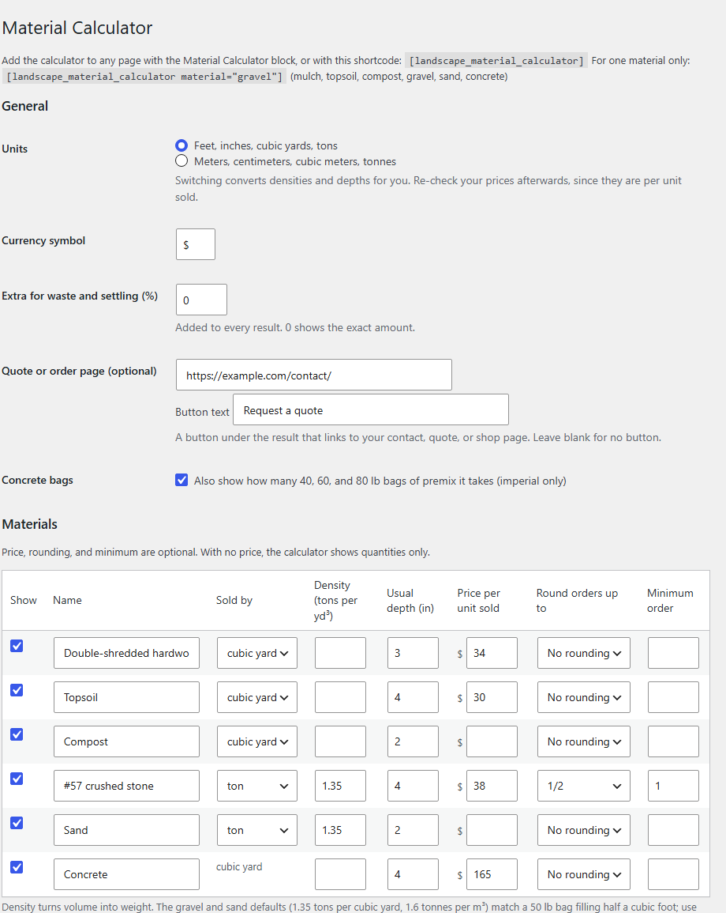

A gravel, mulch, and topsoil calculator for your own website
A free WordPress plugin for landscape supply yards, garden centers, and contractors. Your customer enters the size of the area and the depth. The calculator tells them how much to order, rounded the way you sell it, with your price and a button to your quote page. Fewer "how many yards do I need?" phone calls, and customers who arrive knowing what to order.
Download the plugin (free, 0.1.0) Try it in a real WordPress site
The second button opens a throwaway WordPress site in your browser (WordPress Playground) with the plugin installed and example prices set, so you can change the settings and see the result before you install anything. Nothing is saved.
Live demo
This is the plugin's own output, copied from a WordPress site running it, with example prices: #57 crushed stone at $38 a ton, sold in half tons with a 1-ton minimum; mulch $34, topsoil $30, and concrete $165 a cubic yard. Pick #57 crushed stone and try 24 by 10 feet at 4 inches.
Enter the size of the area and the depth.
One material on its own page
Use [pilequote material="gravel"] or pick a material in the block, for a product page.
Enter the size of the area and the depth.
On your site, the "Request a quote" button goes to the page you choose: your contact form, quote form, or shop. You set its text too, or leave it out.
What you can set
| Materials | Mulch, topsoil, compost, gravel or crushed stone, sand, and concrete. Rename them ("#57 crushed stone"), hide the ones you don't sell. |
|---|---|
| Sold by | Cubic yards or tons (cubic meters or tonnes in metric). Enter your own weight per yard for each stone, since it varies. |
| Price | Your price per unit. Leave it blank to show quantities only. |
| Rounding | Round orders up to 1/4, 1/2, or whole units, the way your loader or truck sells it. |
| Minimum order | For example 1 ton. Small jobs show the minimum and say so. |
| Extra for waste | A percentage added to every result for settling and uneven ground (0 shows the exact amount). |
| Concrete bags | Optionally shows how many 40, 60, and 80 lb bags of premix the same pour takes. |
| Quote button | Link and button text, or no button. |

Install
- Download the zip (don't unzip it).
- In your WordPress dashboard, go to Plugins > Add New Plugin > Upload Plugin, choose the zip, click Install Now, then Activate.
- Go to Settings > Material Calculator: tick the materials you sell, and add your prices, rounding, minimum, and quote page.
- Add the Material Calculator block to a page, or paste
[pilequote]into one.
Needs WordPress 6.3 or newer and PHP 7.4 or newer. Tested on WordPress 7.1 with PHP 8.3. It is also being prepared for the WordPress.org plugin directory; this page will link the listing once it's approved. The plugin's folder name is the same, so a site that installs this zip can update from the directory later.
How the numbers are worked out
- Volume = area × depth. A cubic yard is 27 cubic feet.
- Weight = volume × the weight per yard you set. The gravel and sand default, 1.35 tons per cubic yard, is a 50 lb bag filling 0.5 cubic feet, the figure retailers list for QUIKRETE all-purpose gravel. Use the figure for your own stone.
- Concrete bags use the yields on the QUIKRETE Concrete Mix data sheet: 0.30, 0.45, and 0.60 cubic feet for 40, 60, and 80 lb bags.
- Unit conversions use NIST Handbook 44 (1 short ton = 0.90718474 tonnes; 1 cubic yard = 0.764554857984 cubic meters).
Worked example from the demo: 24 × 10 ft at 4 in is 80 cubic feet, or 2.96 cubic yards. At 1.35 tons a yard that is 4 tons, which is already a multiple of half a ton, so the order is 4 tons at $38 = $152. A 3 × 3 ft patch at 2 in is about 0.075 tons, so it shows the 1-ton minimum: $38.
The math is tested against hand-worked examples and thousands of random cases checked against the engine behind the free DIY Project Calculators site.
Questions
Does it send my customers' data anywhere?
No. The math runs in the visitor's browser. The plugin sends nothing, sets no cookies, adds no tracking, and loads its small script and stylesheet only on pages that show a calculator. (This demo page counts visits with GoatCounter, which uses no cookies; the plugin itself doesn't.)
Will it match my theme?
It uses your theme's fonts, colors, and button style, with a few lines of layout CSS. The screenshots and demo use a plain theme.
Does it cost anything?
No. It's free and open source (GPLv2 or later). A paid add-on with a quote form that emails you the customer's numbers may come later if enough yards use the free version.
My site isn't WordPress, or I need something different.
Tell us what you need in a GitHub issue (delivery fees by zip code, bulk bags, a calculator for Wix or Squarespace). Bug reports and feature requests go there too.
Where is the source code?
github.com/Jesse-py/landscape-material-calculator: the plugin folder, the Playground blueprint, and this page.